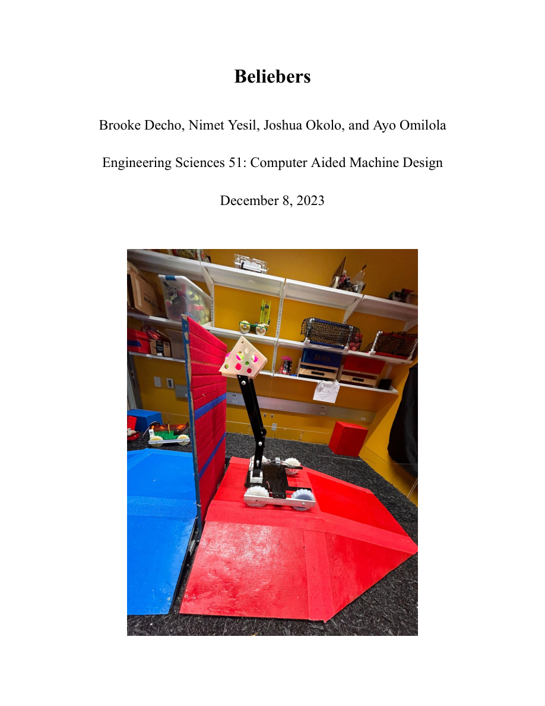

The “Economic” Beam ↗
A lightweight, material-efficient balsa truss developed through force analysis, buckling checks, fabrication, and load testing.
A WORK IN PROGRESS / ENGINEERING · IDEAS · OBJECTS
I'm Nimet Yesil, an engineer and designer exploring how thoughtful technology can shape everyday experiences.
↘01 / ABOUT
I work at the intersection of mechanical engineering, human-centered design, and experimentation. I enjoy taking a concept from early sketches through modeling, prototyping, and testing.
Replace this introduction with your own story, research interests, and approach to design.
02 / SELECTED WORK
A lightweight, material-efficient balsa truss developed through force analysis, buckling checks, fabrication, and load testing.

A team-built robot designed to collect tennis balls, climb 15° and 30° inclines, and place balls on a vertical scoring surface.
An Arduino-based reaction game integrating illuminated buttons, a buzzer, LCD feedback, and score storage.
03 / EXPERIENCE
Add your PDF as assets/resume.pdf to enable this link.
04 / AN UNDERGRADUATE ARCHIVE · 2023—2027
A reverse-chronological record of my undergraduate years, from senior spring to freshman fall: coursework, prototypes, essays, readings, and questions worth returning to.
05 / LET'S CONNECT
I'm interested in opportunities to research, build, and collaborate.